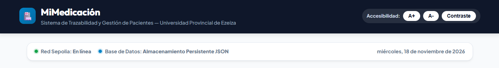
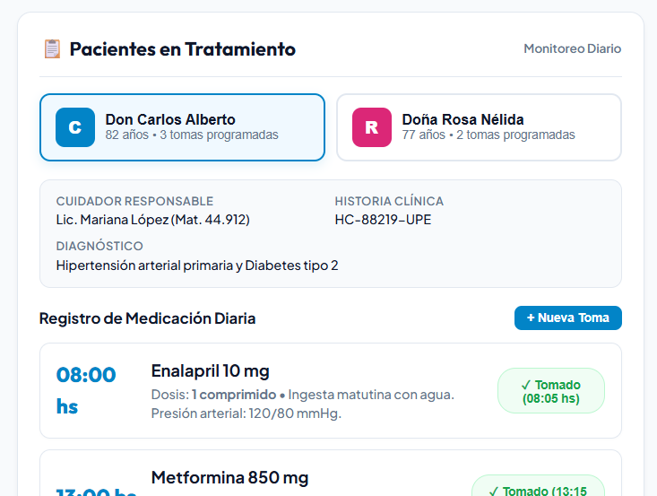
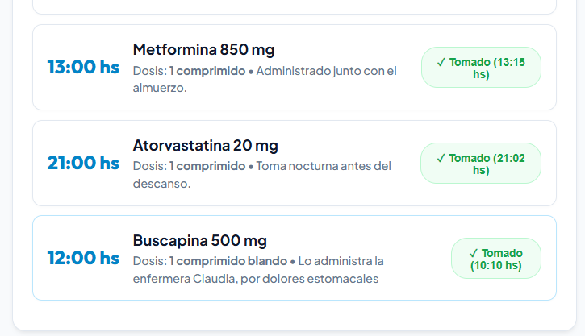
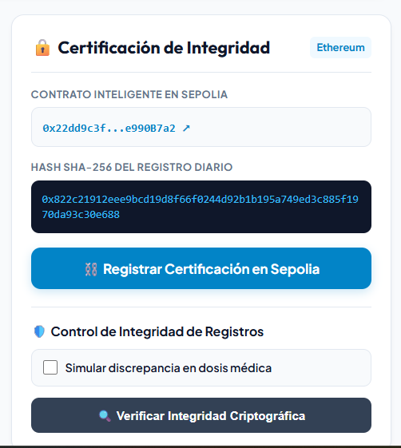

Sistema Hospitalario de Gestión y Trazabilidad Farmacológica para Adultos Mayores con Notariado Criptográfico en Blockchain.
Sincronización en tiempo real entre la capa pública de Ethereum y la base de datos persistente.

Muestra el estado en vivo de la conexión con la red Ethereum Sepolia y el motor de base de datos persistente.
Controles de escalado de fuentes (A+ / A-) y modo de Alto Contraste diseñados especialmente para la visión de adultos mayores.
Registra la fecha y huso horario exacto para la auditoría de cada jornada clínica.
Privacidad médica absoluta: los diagnósticos e historias clínicas residen de forma confidencial fuera de la red pública.

Vinculación de Historia Clínica (HC-88219-UPE), patologías crónicas y cuidadora matriculada (Lic. Mariana López).
Programación de Enalapril, Metformina y Atorvastatina con dosis y verificación de ingesta efectiva.
Garantía de confidencialidad: ningún dato personal toca la blockchain sin anonimización.
Demostración en vivo de la reactividad del sistema ante prescripciones de emergencia.

Se registró exitosamente: "Buscapina 500 mg — 1 comprimido blando por dolores estomacales" administrado a las 10:10 hs.
Identificación explícita de quién efectuó la toma extraordinaria (Enfermera Claudia) para deslinde de responsabilidades.
Al agregarse este nuevo fármaco, el JSON del día cambia y el sistema regenera la huella criptográfica de inmediato.
Smart Contract autónomo desplegado en Sepolia como notario digital inalterable.

Desplegado en Sepolia en 0x22dd9c3f...e990B7a2, con acceso 24/7 en Sepolia Etherscan.
El Hash SHA-256 (0x822c2191...) ocupa exactamente 32 bytes en la EVM, ahorrando más de 40% de gas frente a strings.
Solo la wallet autorizada del backend hospitalario tiene permiso para estampar la firma del cierre diario.
Cómo el Efecto Avalancha de SHA-256 protege al paciente y expone cualquier negligencia médica.
La casilla interactiva "Simular discrepancia en dosis médica" permite probar qué ocurre si un cuidador altera retroactivamente una dosis en la base de datos (ej: de 10 mg a 20 mg).
Resultado: El hash cambia por completo y la función verificarHash() rechaza el registro, exponiendo el fraude ante la justicia o la familia.
✓ Privacidad por Diseño: Cero datos médicos expuestos en Ethereum.
✓ Costo Cero Real: Sepolia Testnet + MongoDB Atlas Cloud M0 + Vercel.
✓ Inmutabilidad Garantizada: Prueba temporal de existencia irrefutable para la salud pública.